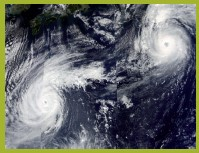
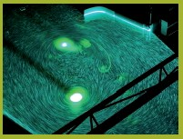
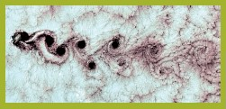
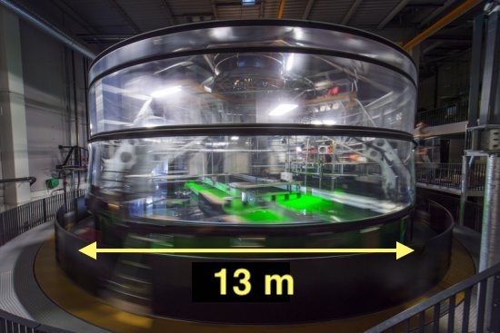

class: center, middle <br/><br/> .title[Dinámica de Fluidos Geofísicos] .subtitle[Clase 01 - Introducción] <br/><br/> .author[Semestre 2022-I] .institution[Facultad de Ciencias] <br/> .coauthor[Profesora: Dra. Karina Ramos Musalem </br> Ayudante: Esteban Cruz Isidro] <br/> .date[20 de septiembre de 2021] <br/><br/> <img style="width:100%" src="./figures/green_waves.png"> <!-- .note[Created with [{Liminal}](https://github.com/jonathanlilly/liminal) using [{Remark.js}](http://remarkjs.com/) + [{Markdown}](https://github.com/adam-p/markdown-here/wiki/Markdown-Cheatsheet) + [{KaTeX}](https://katex.org)] --> --- name: toc class: left <img style="width:50%" src="./figures/ink.jpg"> #Contenido 1. [De lxs profesorxs](#profes) 1. [Revisión del temario](#temario) 1. [Código de conducta](#codigo) 1. [Introducción a los fluidos geofísicos](#fluidosgeofisicos) <!-- Comment out the next slide if you don't want the Table of Contents link --> --- layout: true .toc[[✧](#toc)] --- name: profes class: left # De lxs profesorxs Profesora: [Karina Ramos Musalem](https://anakarinarm.github.io/) - Física (Fac. de Ciencias, UNAM, 2013) - Doctora en Oceanografía ([Universidad de British Columbia](https://www.eoas.ubc.ca/), Vancouver, Canadá, 2020) - Investigadora Asociada C en el [Centro de Ciencias de la Atmósfera](https://www.atmosfera.unam.mx/) (ahora [Instituto de Ciencias de la Atmósfera y Cambio Climático](https://www.gaceta.unam.mx/consejo-universitario-crea-instituto-de-ciencias-de-la-atmosfera-y-cambio-climatico/)) **Contacto**: kramosmu@ciencias.unam.mx Ayudante: Esteban Cruz Isidro - Estudiante de Ciencias de la Tierra (100% créditos) - Tesista del Centro de Ciencias de la Atmósfera ** Contacto**: estebanci@ciencias.unam.mx --- # Horario * Acordamos que las clases síncronas serán los **lunes y miércoles de 14 a 16 hrs**. * Grabaremos las clases y las pondremos a su disposición para uso personal. Por favor **no compartan los videos** por respeto a sus compañeres. * Habrá una hora de "ayudantía" a la semana para resolver dudas por Zoom, ya sea con la profesora o el ayudante, pero también pueden enviarnos sus dudas por correo o, mejor aún, compartirlas en el muro de classroom. --- name: temario class:left # Temario del curso Puedes consultar el temario [aquí](https://drive.google.com/file/d/1shgLRphY1d4rNoa8M6h-YeYXyb1-PKlv/view?usp=sharing) * Seguiremos muy de cerca el libro de B. Cushman-Roisin y J. M. Beckers *Introduction to Geophysical Fluid Dynamics*. Prentice-Hall (Segunda edición o posterior) y complementaremos los temas con otras fuentes que les iremos indicando a lo largo del curso. * Folder "Bibliografía" en Classroom --- class: left # Evaluación |Rubro|Porcentaje| |::|:-:| |Tareas|50%| |Parciales|30%| |Proyecto final|15%| |Participación, etc.|5%| </br> **Tareas**: Habrá aproximadamente 8 en el semestre (~ 1 cada 2 semanas). Se entregan individualmente. </br></br> **Parciales:** Habrá dos exámenes parciales (~ a 1/3 y 2/3 del curso). El *twist* es que 80% de su calificación será del examen individual y 20% del examen en equipo. --- class: left </br> **Proyecto final:** - ¡Mucha libertad creativa! Puede ser teórico, numérico o experimental. - Pueden escoger un sistema de clase y modelarlo numéricamente o experimentalmente, o escoger algún tema más avanzado de DFG y trabajar las ecuaciones. - En equipo - Al final entregarán un reporte especializado, habrá una presentación de los proyectos estilo simposio para el grupo y deberán generar algún material de divulgación (video, infografía, canción, cartel, etc. - Será en vez de un examen final. </br> **Participación**: Creo que su trabajo, entusiasmo y actitud hacia el curso y hacia sus compañeres debe ser recompensado y por eso tenemos este pequeño porcentaje dedicado a eso. --- name: conducta class: Código de conducta Decidamos entre todes las [reglas de convivencia del grupo](https://docs.google.com/document/d/1wpxSBCltwv8oEiInj6khU4gi1QuF7fUwb57bi7Bty0o/edit?usp=sharing). --- class: left Proyectos de tesis y servicio social --- name: intro class: center, middle # ¿De qué hablamos cuando hablamos de fluidos geofísicos? --- class: center ## ¿De qué hablamos cuando hablamos de fluidos geofísicos? <img style="width:100%" src="./figures/Nora_Ida_NOAAsatellites.jpg"> Huracanes Nora (izq.) e Ida (der.) Fuente: NOAA Satellites --- class: center count: false ## ¿De qué hablamos cuando hablamos de fluidos geofísicos? <img style="width:100%" src="./figures/gulf_current_eddies_NOAA.jpg"> Fuente: NOAA [Atlantic Oceanographic and Meteorological Laboratory](https://www.aoml.noaa.gov/news/anticyclonic-eddies-off-cuban-coast/) --- name: fg class: left # Características de los fluidos geofísicos (FG) </br></br> * Se encuentran en un sistema de referencia en **rotación**; </br></br> * por lo regular están **estratificados**; </br></br> * En la naturaleza ocurren a "gran escala" (en un momento definiremos "gran"). Este curso tratará de las peculiaridades que aparecen en la dinámica del flujo debidas a la influencia de una, otra o ambas características. --- class: left ## Efecto de la estratificación .left-column[</br></br></br></br></br>La **estratificación** es la variación vertical de la densidad.] .right-column[<img style="width:100%" src="./figures/latte.jpg">] --- class: left count: false ## Efecto de la estratificación .left-column[Muevo elemento de fluido en equilibrio de $Z$ hasta $Z+h$ $\rightarrow$ **fuerza boyante** La frecuencia de oscilación$^1$.footnote[$1.$ Conocida como frecuencia de Brunt-Väisälä] del elemento de fluido está dada por: $$N^2=\frac{g}{\rho_0}\frac{\partial{\rho}}{\partial z}$$ $\uparrow N^2$ inhibe movimientos verticales y da estructura vertical al flujo.] .right-column[<img style="width:100%" src="./figures/latte_annotated.jpg">] --- class: left ## Efecto de la rotación .left-column[<img style="width:100%" src="./figures/coriolis_parameter.png"> $\Omega=7.2921\times10^{-5}$ rad s$^{-1}$ Agrega el término $2\vec{\Omega} \times \vec{u}$ a las ecuaciones de momento. ] .right-column[Flujos tienden a desviarse a la **derecha** en el **hemisferio norte** y a la izquierda en el hemisferio sur. **Parámetro de Coriolis** </br> $$f=2\Omega\sin{\varphi},$$ donde $\varphi$ es la latitud. Por ejemplo: En Huatulco ($\varphi=17.09^{\circ}$ N), $f=4.28\times10^{-5}$ s$^{-1}$ En Ensenada ($\varphi=30.90^{\circ}$ N), $f=7.47\times10^{-5}$ s$^{-1}$] --- class: left ## Efecto de la rotación </br> Para que el flujo sienta el efecto de la rotación, las escalas temporales deben ser del orden de un periodo de rotación. $$ \epsilon = \frac{\textrm{tiempo de una revolución}}{\textrm{tiempo en avanzar } L \textrm{ a velocidad } U} $$ $$= \frac{\frac{2\pi}{\Omega}}{\frac{L}{U}} = \frac{2\pi U}{\Omega L}.$$ Si **$\epsilon \le 1$, la rotación es importante**. Esto limita el tamaño y velocidad del flujo y nos da una definición de "gran escala". Nombre especial de $\epsilon$: *Número de Rossby* en forma $Ro=U/fL$. --- class: left ## Similaridad dinámica ¿Por qué podemos estudiar la atmósfera, el océano y un tanque con las mismas ecuaciones? $$\frac{\partial\vec{u}}{\partial t}+ \vec{u}\cdot\nabla\vec{u} + \vec{f}\times\vec{u} = \frac{1}{\rho} \nabla P - \vec{g} + \mu \nabla^2\vec{u}$$ Ej. Para que la rotación importe, $Ro=U/fL<1$: **Tierra** $f$ ~ $10^{-4}$ s$^{-1}$ *Océano*: $L\sim10^3$ km, $U\sim10$ cm s$^{-1}$, $Ro\sim10^{-2}$ *Atmósfera*: $L\sim10^4$ km, $U\sim10$ ms$^{-1}$, $Ro\sim10^{-3}$ **Plataforma giratoria** $f$ ~ $10^{-1}$ s$^{-1}$ *Laboratorio*: $L\sim1$ m, $U\sim10^{-2}$ cm s$^{-1}$, $Ro\sim10^{-1}$ --- class: left count: false ## Similaridad dinámica Para que dos flujos sean **físicamente equivalentes** o análogos deben tener **similaridad dinámica** (cinemática y geométrica). **Similaridad dinámica**: La importancia relativa entre distintos tipos de fuerza (e.g., inerciales, viscosas, etc.) debe ser la misma para ambos flujos. .center[  .caption[Interacción de remolinos cerca de Japón y remolinos en el laboratorio - LEGI Plataforma Coriolis (J.B. Flor, 2005). Imágenes tomadas de http://www.legi.grenoble-inp.fr/web/spip.php?article757].] --- class: left </br></br> Habrá **similaridad dinámica** si los **grupos adimensionales** de ambos flujos son **iguales**. </br> Algunos ejemplos de números adimensionales relevantes: |||||| |::||:-:||:-:| |**Rossby**||rotación vs. advección|| $Ro=\frac{U}{fL}$| |**Burger**||rotación vs. estratificación|| $Bu=\frac{NH}{fL}$| |**Reynolds**||inerciales vs. fricción|| $Re=\frac{UL}{\nu\_E}$| .center[ <img style="width:45%" src="./figures/vonKarman_lab.jpg"> .caption[Vórtices de von Kárman sobre la isla de Selkirk y experimento análogo de A. Stegner (2005). Imágenes tomadas de http://www.legi.grenoble-inp.fr].] --- class: left ## La DFG se puede estudiar en un laboratorio .left-column[**Rotación**: Plataforma o mesa giratoria </br></br> **Estratificación**: Distintas concentraciones de sal o gradientes de temperatura </br></br> **Medio**: Usamos agua en vez de aire para modelar tanto océano como atmósfera (nunca he visto un túnel de viento giratorio, pero ¿tal vez sí hay?). </br></br> .caption[Mesa giratoria del Laboratorio de Fluidos Geofísicos, UBC] ] .right-column[<img style="width:92%" src="./figures/TanknTable.JPG"> ] --- class: left ## Plataformas giratorias .center[  <img style="width:45%" src="./figures/diynamics_tank.gif"></br> .caption[(Izq.) Plataforma giratoria [Coriolis LEGI](http://www.legi.grenoble-inp.fr/web/spip.php?article757), Grenoble, Francia$^2$.footnote[$2.$ Puedes pasear virtualmente por la Plataforma Coriolis en https://my.matterport.com/show/?m=CXxXSbTXREB] y (der.) pequeña mesa giratoria [DIYnamics](https://diynamics.github.io/). ]] * **Investigación**: 13 m de diámetro (1) hasta 1 m de diámetro (muchas). </br></br> * **Docencia**: Tocadiscos, mesas más pequeñas, ... </br></br> * **México**: Laboratorio de Fluidos, CICESE, Ensenada 1 m (?) , Instituto de Astronomía y Meteorología de la U. de G. 1.5 m. --- class: left ## La DFG se puede estudiar con simulaciones numéricas En general discretizamos el dominio de interés y las ecuaciones de movimiento y termodinámica usando diferencias finitas, volumen finito, etc. Ej: [pronósticos y modelos del grupo IOA](https://pronosticos.unam.mx/CCAMain/index.php/en/) del CCA (ahora ICACC). <img style="width:45%" src="./figures/temp_mex_ioa.png"> --- class: left # Referencias Cushman-Roisin y Beckers - Capítulos 1 y 11.